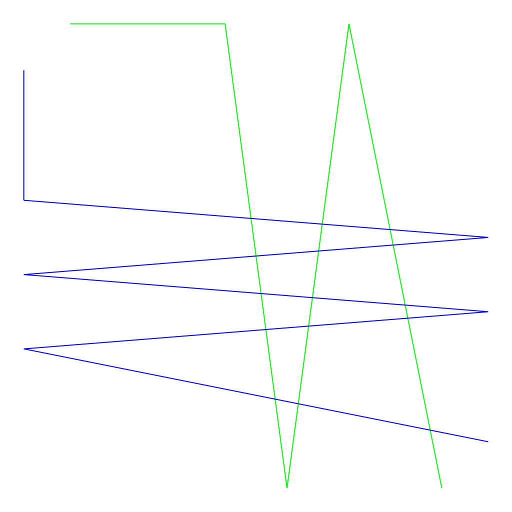
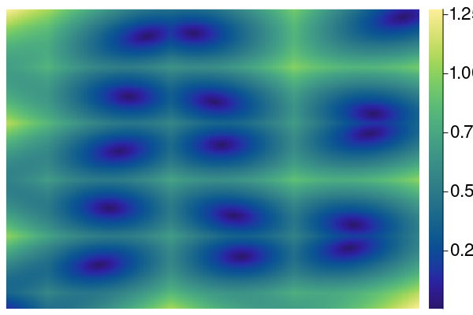
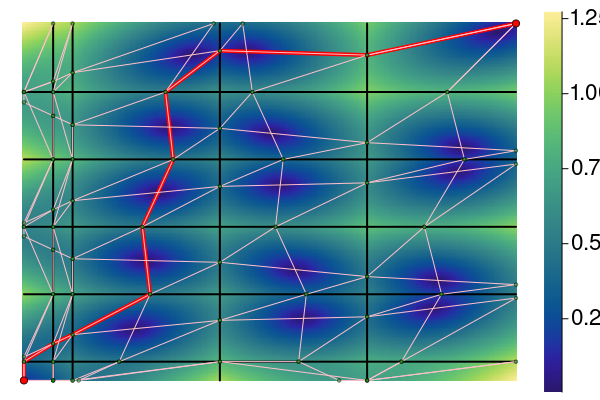
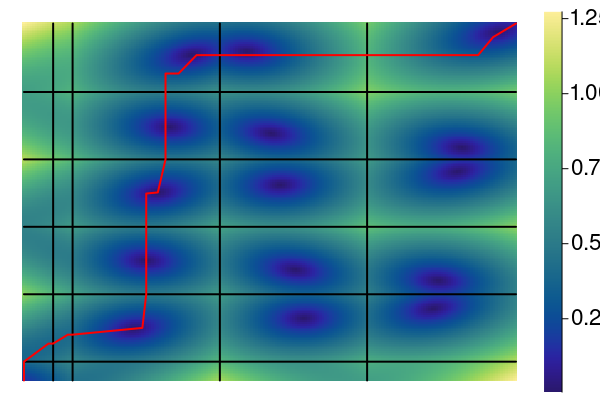
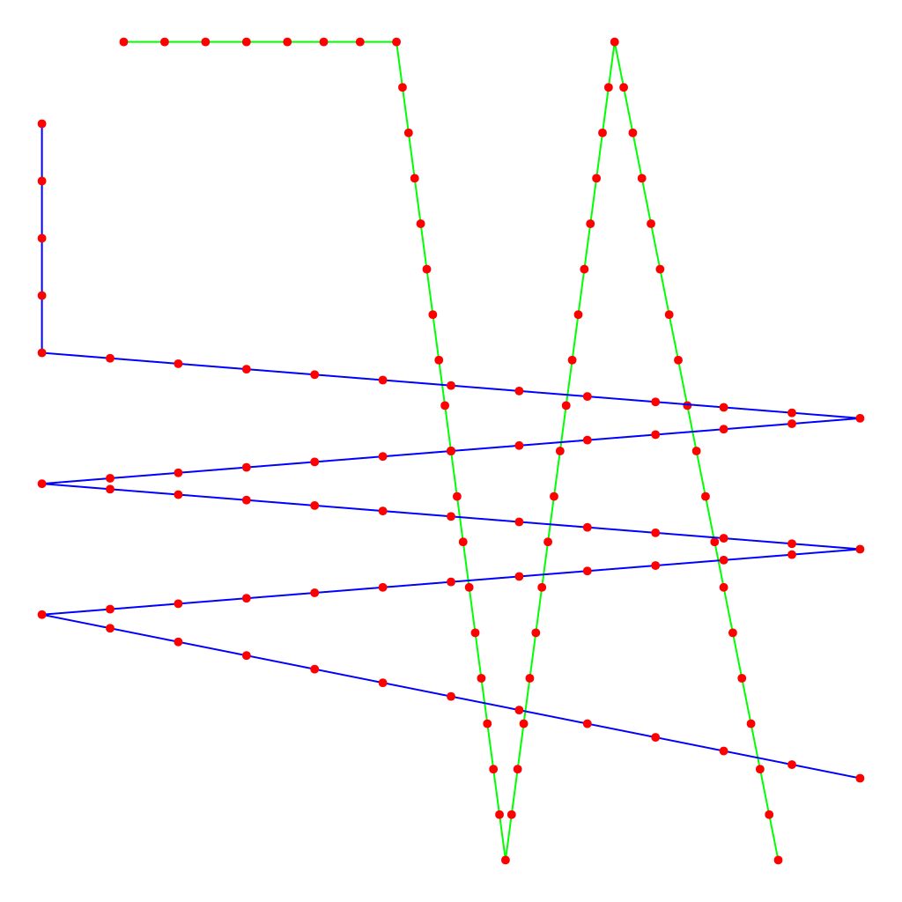

<head><TITLE>output/10/</TITLE>
<script type="text/x-mathjax-config">
MathJax.Hub.Config({ tex2jax: {inlineMath: [['$','$'], ['\(','\)']]}});
</script><script type="text/javascript"
src="https://cdnjs.cloudflare.com/ajax/libs/mathjax/2.7.0/MathJax.js?config=TeX-AMS-MML_HTMLorMML">
</script>
</head><body>
<h1>Example 10</h1>
<hr>
<hr>


<h2>Animation of the Frechet morphing</h2>

 <video controls autoplay    src="f_c_movie.mp4" type="video/mp4" />
</video>


<hr>
<table>
  <thead>
    <tr class = "header headerLastRow">
      <th style = "text-align: right;">Curves</th>
      <th style = "text-align: right;"># Vertices</th>
      <th style = "text-align: right;">Length</th>
    </tr>
  </thead>
  <tbody>
    <tr>
      <td style = "text-align: right;"><a href="poly_a.txt">P</a></td>
      <td style = "text-align: right;">6</td>
      <td style = "text-align: right;">3.370836696108098</td>
    </tr>
    <tr>
      <td style = "text-align: right;"><a href="poly_b.txt">Q</a></td>
      <td style = "text-align: right;">7</td>
      <td style = "text-align: right;">5.3125834879935825</td>
    </tr>
  </tbody>
</table>

<hr>
<table>
  <thead>
    <tr class = "header headerLastRow">
      <th style = "text-align: right;">Distance</th>
      <th style = "text-align: right;">Value</th>
    </tr>
  </thead>
  <tbody>
    <tr>
      <td style = "text-align: right;">Fréchet</td>
      <td style = "text-align: right;">0.8236877675803729</td>
    </tr>
    <tr>
      <td style = "text-align: right;">VE Fréchet</td>
      <td style = "text-align: right;">0.823687767580373</td>
    </tr>
  </tbody>
</table>

<hr>
<h2>Free space diagram heatmap:</h2>

<hr>
<h2>VE-Frechet Retractable solution:</h2>
<h2>Frechet cont+monotone solution:</h2>(What the animation shows.)<br>


<hr>
<h1>Discrete Frechet</h1>

Generated by sampling 10 points along each edge...<br>





<p>

The resulting morphing - extended to continuous:


 <video controls autoplay    src="discrete_frechet.mp4" type="video/mp4" />
</video>
2024-02-08T13:51:47.941</body>
